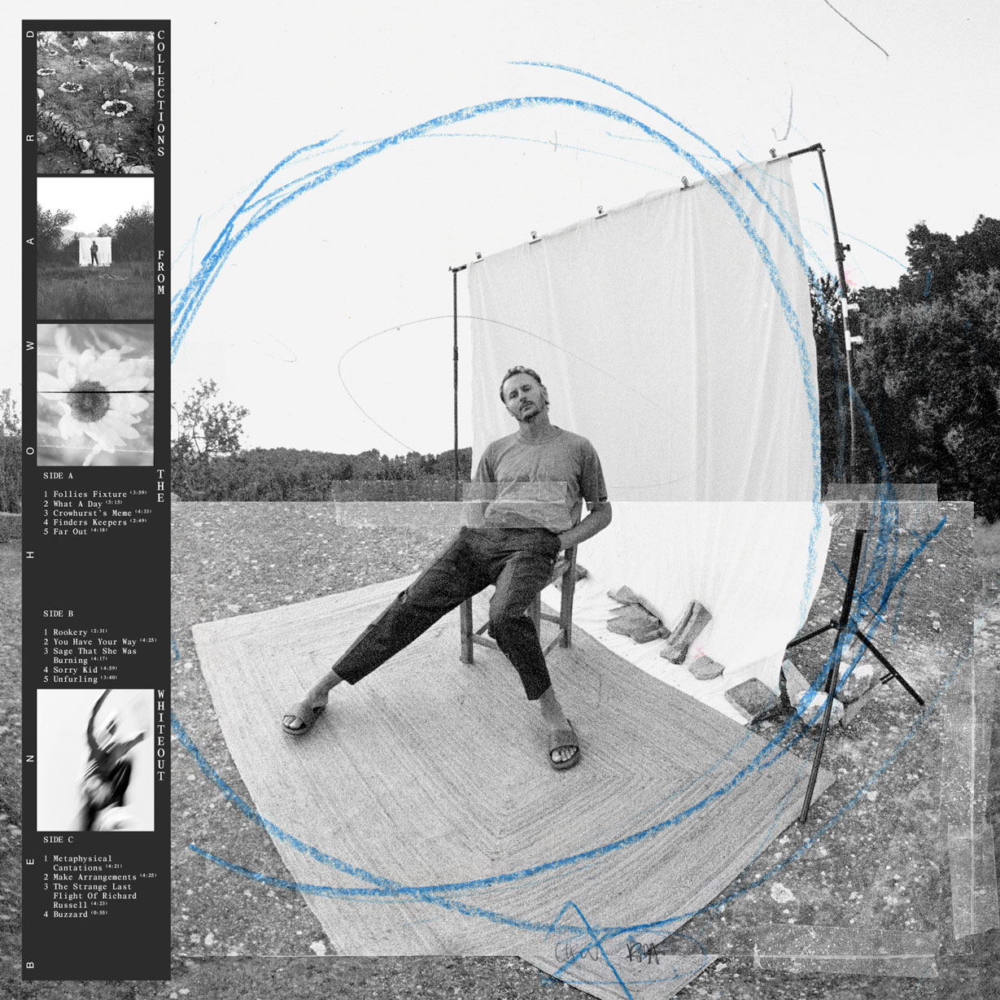

Collections from
the Whiteout

Released 26/03/2021
- Follies Fixture 3:59
- What A Day 5:15
- Crowhurst's Meme 4:33
- Finders Keepers 2:49
- Far Out 4:18
- Rookery 2:31
- You Have Your Way 4:25
- Sage That She Was Burning 4:17
- Sorry Kid 4:59
- Unfurling 3:40
- Metaphysical Cantations 4:21
- Make Arrangements 4:25
- The Strange Last Flight Of Richard Russell 4:23
- Buzzard 0:55